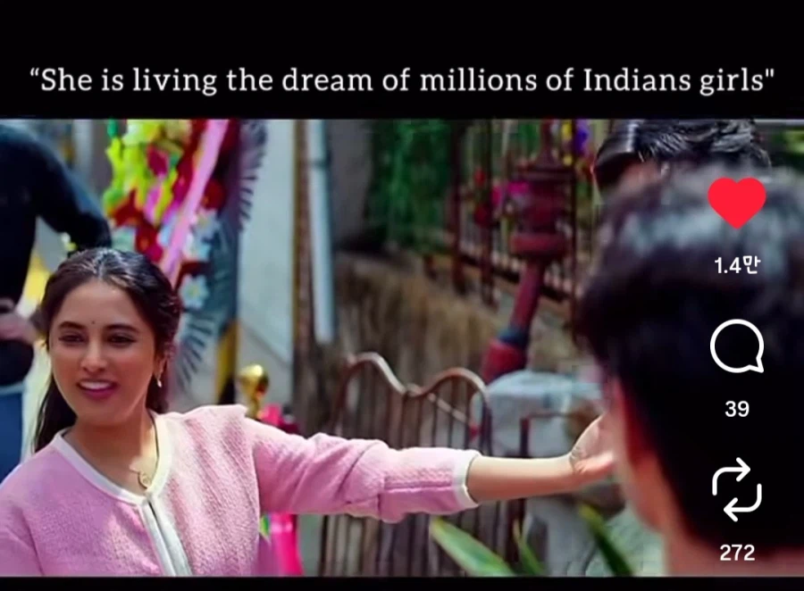

https://bbs.ruliweb.com/best/board/300143/read/76734562
어린시절 허황옥 연극을 하면서 관심을 갖고 꿈꿨던 한국으로 가 자아를 찾고 꿈을 이루려는 인도 여성을 다룬 인도영화
세계 7위로 시작하더니 3위까지 치고 감
(인도에선 공개 이후 쭉 1위)
보통 이런 줄거리의 영화는 파리 같은 유럽으로 가는게 룰이었는데 서울로 바뀜
영화는 주인공이 한국으로 넘어온 이후는 거의 좋은게 좋은거 식의 판타지이긴 한데
등장하는 한국인들은 좋은 사람이 대부분이고 한국 유명 관광지들을 스토리 상 어떻게든 우겨넣고 다 예쁘게 찍음
한국관광공사 사장이 보면 거품물고 기립박수 칠 수준

오죽하면 수백만 인도 여성들의 꿈을 구현했다는 평이 대세
참고로 우리가 만든거 절대 아니고 합작도 아니고 영화 끝날때까지 춤을 안춤
왜 정우성 나와서 핫 하핫하 안함